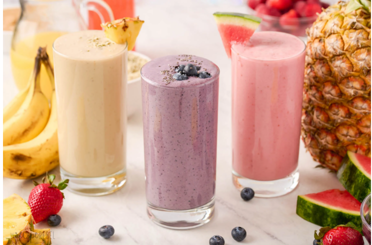

Easy Fruit Smoothie

This recipe is pretty versatile. I recommend these combinations, but you can try whatever. Here you go:
- Strawberry with:
- Banana
- Mango
- Kiwi
- Spinach
Or just by itself
- Blueberry by itself
- Pineapple
- Orange
And the list goes on. Do what works for you. Let's see how we'll prepare this.
Ingredients
- Fruit of choice
- Ice
- Optional:Milk, Nut milks
- Optional:Sugar, syrup, sweetner
Preparation
- The smoothie will come out thicker and smoother if the fruit is frozen before going into the blender.
- Put fruit, ice, and optional ingredients into the blender.
- Blend until desired smoothness, and you're done!
Super easy. Perfect for a quick, out the door breakfast, or just trying to watch the calories. Enjoy!